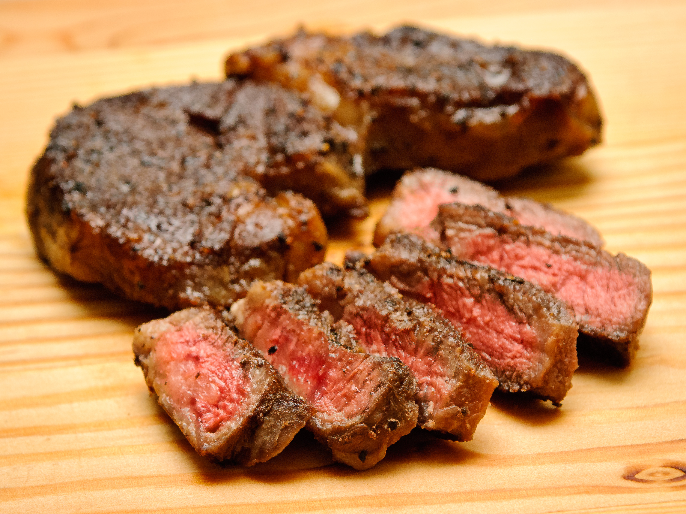

Steak

Juicy, tender, and full of bold flavor
This steak is pan-seared to perfection with a crispy
crust and a melt-in-your-mouth center.
Ingredients
- 1 thick-cut steak
(e.g., ribeye, sirloin, or filet mignon)
- Salt
- 1-2 tbsp olive oil or a high smoke-point oil
- 2-3 garlic cloves, smashed
- 2 tbsp unsalted butter (for basting)
Steps
- Take the steak out of the fridge and let it rest at room temperature for about 20-30 minutes.
- Pat the steak dry with paper towels and season both sides generously with salt and freshly ground black pepper.
- Heat a heavy skillet (preferably cast iron) over high heat until very hot. Add a tablespoon of oil.
- Sear the steak for 1 minute on each side to develop a crust.
- Continue cooking the steak for 3-4 more minutes, flipping it every minute for even cooking.
- In the last 2 minutes of cooking, reduce the heat to medium and add butter, smashed garlic, and herbs (optional).
- Baste the steak by spooning the melted butter over the top continuously for 1 minute, then flip and repeat on the other side.
- Remove the steak from the pan and wrap it loosely in foil. Let it rest for 10 minutes before slicing and serving.